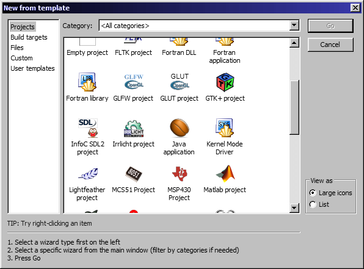

Az SDL telepítése
Czirkos Zoltán, Dobos-Kovács Mihály, Lant Gábor · 2018.09.01.
Az SDL grafikus könyvtár telepítése Windowson, Linuxon és Mac OS X-en.
Az SDL telepítéséhez két dolgot kell tenni. Először is, fel kell telepíteni az SDL fájljait valamilyen operációs rendszer specifikus módon. Utána pedig be kell állítani a fejlesztőkörnyezetet, hogy megtalálja azokat. Alább megtaláltok minden szükséges fájlt Windows-hoz (Linuxon automatikus a dolog).
Ha a Code::Blocksból a MinGW-vel együtt telepített változatot használod, akkor az SDL telepítése néhány fájl bemásolásából áll. Az SDL2 fájljai az alábbi linkről tölthetőek le. Ezek csak az általunk támogatott Code::Blocks verzióhoz jók, egyéb helyekről letöltöttekhez valószínűleg nem.
sdl2-codeblocks1712-windows.zip
A .zip fájl letöltése után kattints a jobb egérgombbal a fájlra, és válaszd az Fájlok kibontása... (Extract All...)
menüpontot. Ekkor a Windows megkérdezi, hogy hova kell tenni a fájlokat, akkor pedig a Code::Blocks telepítési helyét add meg; ez
valószínűleg a C:\Program Files\CodeBlocks mappa lesz (esetleg C:\Program Files (x86)\CodeBlocks).
Kicsomagolás közben lesznek egyforma mappák. Ha kérdezi a fájlkezelő, válaszd a merge (összefésülés) és az overwrite (felülírás)
lehetőségeket.
Ha ez kész, akkor a Code::Blocks menüjéből ki kell választani a „Settings/Global variables…” menüpontot, aztán a „New” gombra
nyomva létrehozni egy „sdl2” nevű változót. A „base” mezőben a ...-ra kattintva meg kell adni a C:\Program
Files\CodeBlocks\MinGW mappát, vagy itt is C:\Program Files (x86)\...-t, amelyik van.
SDL-es projekt létrehozása
Ha sikerült a dolog, a Code::Blocks újraindítása után a „New Project” menüpontnál megjelenik az InfoC SDL projekttípus. Ennek a varázslóját a szokásos módon végigkattintgatva létrehozható a projekt. Ha jól sikerült az előző lépésben az „sdl2” változó beállítása, akkor a telepítés helyét már nem kell megadni, mert fogja tudni magától.
A csomag az SDL2_gfx 1.0.4-es verziójának egy módosított változatát tartalmazza; kijavítva benne azt a hibát, ami miatt némely függvényei összecserélték a színkomponenseket.
Ez sokkal egyszerűbb, mint a fenti. Az SDL könyvtárak csomagból elérhetőek és automatikusan telepíthetőek. Ubuntun csak ennyit kell beírni egy parancssorba:
sudo apt install libsdl2-dev libsdl2-gfx-dev libsdl2-image-dev libsdl2-ttf-dev libsdl2-mixer-dev
Sajnos a libsdl2-gfx 1.0.4-es és azelőtti verzióiban van egy hiba, ami miatt a színeket összekeveri.
Ezért ha olyan verzió van, azt érdemes törölni (sudo apt remove libsdl2-gfx), helyette itt egy javított:
SDL2_gfx-1.0.4-infoc-javitott.tar.gz
Ennek telepítése kicsomagolás után:
./configure make sudo make install
SDL program fordítása parancssorból
Jár az SDL-hez egy parancssori szkript, amely kiírja, hogy milyen paraméterek
szükségesek a fordítóprogram számára. Ez az sdl2-config. Ennek kimenete a szükséges
opciók listája, amelyet a fordítónak a parancssorból át tudunk adni, a ` (backtick)
jellel. A hello.c SDL-es programunk lefordításához ennyit kell tenni parancssorból:
gcc hello.c -o hello `sdl2-config --cflags --libs` -lSDL2_gfx -lSDL2_ttf -lSDL2_image -lSDL2_mixer
Ez az alap SDL mellett a többi függvénykönyvtárat is a programhoz linkeli.
A legegyszerűbb módja az SDL2 telepítésének Macre az, ha a Homebrew nevű packet managert használjuk. Ennel telepítése egyszerű, Terminálba be kell illeszteni a következő sort:
/usr/bin/ruby -e "$(curl -fsSL https://raw.githubusercontent.com/Homebrew/install/master/install)"
Ezek után az SDL és további könyvtárak telepítése következik. Terminálba:
Brew install sdl2 Brew install sdl2_gfx
A Homebrew default telepítési könyvtára az /usr/local/cellar. Ha valaki Xcode-t használ akkor a SDL illesztése a
következő képpen zajlik.
- Az Xcode project fájlt kiválasztva bal oldalt, felül a Build setting fülön belül kikeressük a Header search paths bekezdést.
Itt ezt beállítjuk erre a mappára:
/usr/local/include. - Build phases fülön belül a Link Binary With Libraries bekezdésben meg kell adnunk a könyvtárak elérési útvonalát. Plussz gombra
kattintás után Add other... és ki keressük az SDL fájlokat. A megnyíló ablakban Cmd+Shift+g gombok lenymásával elérhető ez a mappa:
/usr/local/cellar. Itt keressük meg a kívánt fájlokat, SDL-hez/usr/local/cellar/sdl2/2.0.8/bin/libSDL2-2.0.0.dylibA gfx és további könyvtárakhoz hasonlóan járunk el. - Ha képeket vagy fájlokat is illesztünk a programhoz akkor érdemes beállítani annak is az elérését. Ami az Xcode-on belül Product/Scheme/Edit scheme... menüpont alatt érünk el. Itt az Options fül alatt állítsuk be a Use custom working directory... alatt a saját projektünkhöz tartozó mappát.
Ezek után és az SDL-es írásban említett bug kiküszöbölése után már működnie kell az SDL-nek.